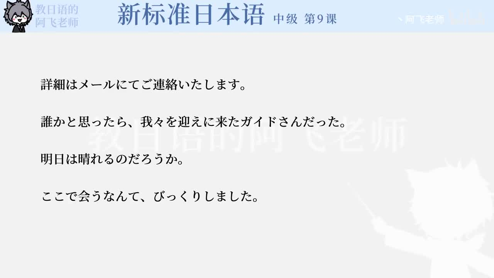

Bilibili P143 · Grammar Briefing
トラブルの文法
围绕机场行李迟迟不出来的场景，学习如何委婉说明问题、礼貌询问、表达不满、请求服务，以及服务人员常用的自谦和郑重表达。
全篇听力精讲
按 13 个语法点轮播。每项包含日语例句、中文意思、接续、常见用法和易错提醒，可暂停、跳转、倍速播放。
这一讲解决什么
顾客怎么说麻烦用「んですけど」「いくら～ても」「いったい～ばいいんですか」表达困扰和焦急。
服务人员怎么回应用「申し訳ございません」「お調べしております」「お待ちいただけませんか」安抚并处理。
机场信息怎么确认用「便」「予定通り」「後ほど」「お届けいたします」说明航班和后续安排。
第9课麻烦处理链
1 · 说明问题出てこないんですけど
2 · 确认特征どのようなお荷物
3 · 查询状态お調べしております
4 · 顾客催促早くしてもらえませんか
5 · 后续送达お届けいたします
13组语法与机场服务表达
机场麻烦核心词汇
整块记忆的搭配
练习与复习
来源说明：视频标题、时长、CID 和首帧来自 Bilibili 公开视频接口；P143 无公开字幕。本页依据该视频对应的《新标准日本语》中级第9课「トラブル」语法与课文例句整理，不是视频逐字稿。